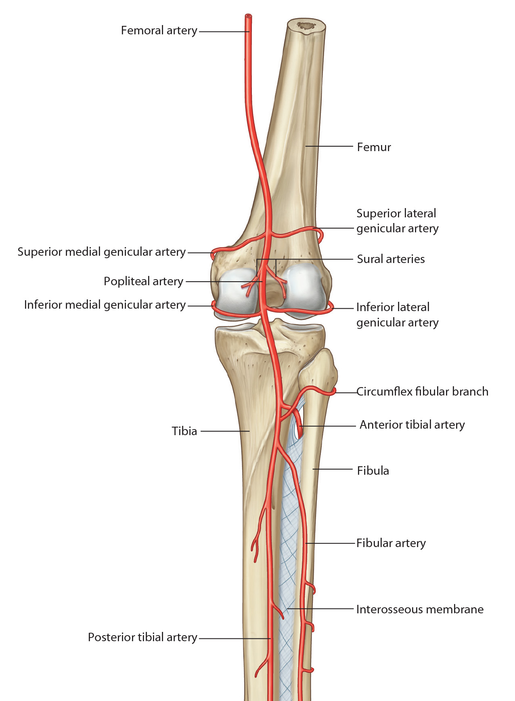

Lab 7 - Module 3 - Popliteal Fossa: Page 1 of 5
READINGS:Gray's Anatomy for Students (Fourth Edition): Pages: 609-611 |
×

Popliteal Arteries
|  |
| Tap on image to enlarge |
| Focus on the posterior knee. |
| Add the Femoral Artery. |
| Add the Femoral Vein. |
| Add the Adductor magnus muscle. The membrane between the adductor magnus and the femur provides a portal to the politeal fossa - the Adductor hiatus. |
| Add the Popliteal Artery which enters the fossa through the adductor hiatus as a direct continuation of the femoral artery. |
| The Popliteal Artery gives off five genicular arteries that are important contributors to the genicular anastomosis around the knee. |
| Add the superior lateral genicular artery. |
| Add the superior medial genicular artery. |
| Add the inferior lateral genicular artery. |
| Add the inferior medial genicular artery. |
| Add the middle genicular artery which pierces the joint capsule of the knee to become intra-articular and supply the cruciate ligaments. (NOT IDENTIFIED IN THIS CADAVER) |
| Add the Popliteus muscle. |
| Add the anterior tibial artery and the posterior tibial artery which divide the Popliteal artery at the inferior border of the Popliteus muscle. |